D12. 실습: ESN을 직접 짜서 돌려보면 무엇이 보이는가?
Phase 2 · RC는 왜, 어떻게 작동하는가 · 11월 4일 (수)
답에 들어가야 할 것 — NARMA10, memory capacity 측정. 노드 수·spectral radius·leak rate 변화. 입력 지연 탭 + 선형 회귀 baseline과 비교. Phase 2 종합
기본 경로: ① 사전 테스트(권장) → ② 학습자료(구간마다 잠깐 점검까지) → ③ 백지 회상 → ④ 가르치듯 내 답. ⓪·⑤와 접힌 '심화'·'추가 연습'은 선택입니다. 한 번에 끝낼 필요 없이 구간 단위로 나눠 읽어도 되고, 다시 열면 '지난번 읽던 곳' 링크가 뜹니다.
① 사전 테스트와 먼저 만들어 보기
아직 배우지 않은 내용을 먼저 풀어 봅니다. 많이 틀리는 것이 정상이고, 그게 목적입니다. 먼저 답해 본 문제는 읽을 때 눈에 들어오고 더 오래 남습니다. 문제마다 정답만 보이고, 이유는 학습자료와 ⑤ 다시 풀기에서 봅니다. 다 풀면 학습자료가 열립니다. 건너뛰려면 학습자료 위의 '그냥 읽기'를 누르세요(권장 단계일 뿐 필수는 아닙니다).
② 학습자료
오늘의 연구 질문 — 소자 논문이 "우리 reservoir로 NARMA10 오차 0.05를 얻었다"고 쓰면, 그 숫자가 reservoir 덕분인지 어떻게 판정하나? 오늘은 노드 200개짜리 소프트웨어 ESN을 직접 돌려, 그 판정(학습에 쓰지 않은 시험 데이터, 같은 특징 수의 기준선, 난수에 따른 흔들림)을 내 손으로 해 봅니다.
필요한 개념 (★ = 오늘 처음)
- 상태 갱신식과 \(W\)(D8 기초), ridge readout과 λ 고르기(D8 기초, D8 4-5), held-out과 기준선(D6 기초 4), washout·ESP·spectral radius·leak(D9 기초: ESP, spectral radius, leak), 비선형(D10 기초), 용량 \(C = 1 - \text{오차}/\text{분산}\)과 기억–비선형 상충(D11 기초: 용량, 상충) — 처음 쓰는 자리에서 한두 줄로 다시 말합니다
- ★ 터미널·프롬프트, 명령 한 줄의 조각(프로그램·파일 경로·옵션) (1구간)
- ★ NARMA10 과제, NMSE라는 이름, memory capacity(MC)를 재는 순서, 지연 탭 기준선 (2구간)
- ★ 정규화·입력 스케일링, 학습/검증/시험 나누기 (3구간)
- ★ 출력 줄 읽기: 평균 ± 표준편차,
1e-07표기, ESP 확인 줄 (4구간)
끝나면 내 말로 설명할 수 있어야 하는 것
- study 폴더에서
python tools/esn.py를 돌리고, 출력의base줄을 그림 6처럼 다섯 칸으로 끊어 각 숫자가 무엇을 센 값인지 말할 수 있다. - 손잡이 하나(예: leak 1.0 → 0.1)를 바꾸기 전에 NMSE와 MC의 변화를 예측하고, 결과를 D9–D11의 개념(흔적이 남는 배율, ESP, 기억–비선형 상충)으로 설명할 수 있다.
- 그림 9에서 기본 ESN(특징 202개) 0.053과 2차 지연 탭 기준선(특징 231개) 0.035를 짚으며, "ESN이 낫다"가 어떤 기준선·어떤 특징 수와 비교했을 때만 말할 수 있는 문장인지 설명할 수 있다.
나중에 쓰이는 곳 — D13(소자 실험으로 MC 재기), D15–D16(벤치마크와 기준선 비교에서 NMSE·지연 탭 재사용), D17(같은 정확도를 내는 디지털 기준선과 시스템 비용 비교), D29(내 소자 실험 계획의 MC·NMSE). 소자 판단으로는 "내 소자 배열의 readout이 같은 특징 수의 지연 탭 기준선보다 시험 데이터에서 나은가, 그리고 더 싼가"에 쓰입니다.
오늘은 실습일이자 Phase 2를 마무리하는 날입니다. D7–D11에서 숫자 하나, 둘짜리 손 계산과 그림으로 따라온 것(상태 갱신, ridge readout, fading memory, spectral radius, 비선형, 정보처리용량)을 노드 200개짜리 진짜 echo state network(ESN)로 한꺼번에 돌려 봅니다. 프로그래밍을 몰라도 됩니다. 터미널에 명령 한 줄을 넣고, 나온 숫자를 읽고, 그 숫자가 왜 그렇게 나왔는지 앞의 닷새로 설명하는 것이 오늘 할 일의 전부입니다.
- 코드를 어떻게 돌리나? (터미널 여는 법부터)
- 무엇을 시키고 무엇으로 채점하나? (NARMA10, NMSE, memory capacity, 지연 탭 기준선)
- 데이터를 넣기 전에 무엇을 손보나? (정규화, 입력 크기, washout, 나누기)
- 출력의 각 줄과 숫자는 무슨 뜻이고, 내 답의 표 어디에 적나?
- 노드 수·spectral radius·leak·입력 크기를 바꾸면 무엇이 달라지고, 왜 그런가?
- ESN은 기준선보다 언제 낫고 언제 나을 게 없나?
- Phase 2 전체에서 무엇이 바뀌었나?
1. 실습 준비: 터미널을 열고 코드를 돌리기까지
이 구간을 읽고 나면 study 폴더에서 터미널을 열고, Python과 numpy가 있는지 확인하고, python tools/esn.py --quick과 python tools/esn.py를 돌려 첫 줄과 마지막 줄이 기대한 모양인지 확인할 수 있다.
터미널이란. 마우스로 아이콘을 누르는 대신 글자로 컴퓨터에 명령하는 창입니다. 창에 PS C:\Users\…\study> 같은 줄이 보이는데, 이것을 프롬프트라고 부르고 "지금 이 폴더에 있으니 명령을 입력하라"는 뜻입니다. 명령을 치고 Enter를 누르면 실행되고, 결과가 아래에 글자로 나옵니다. Windows에서는 PowerShell이라는 터미널을 씁니다.
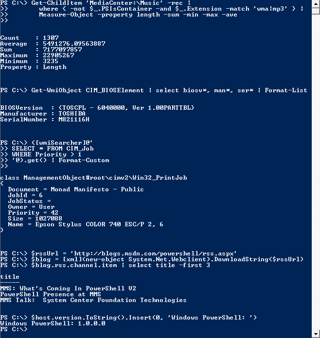
로 시작하는 프롬프트 뒤에 명령이 적혀 있고, 그 아래에 Count, Average 같은 결과가 흰 글자로 나와 있다" loading="lazy" class="figure-img">PS C:\> = 프롬프트("지금 C:\ 폴더에 있다, 명령을 쳐라"), (2) 그 뒤에 사람이 친 명령, (3) 그 아래 컴퓨터가 글자로 낸 결과. 오늘 내 창에서는 프롬프트가 PS C:\Users\…\study>처럼 끝나야 합니다. 지금의 Windows PowerShell도 파란 배경에 같은 구조이지만, 버전에 따라 글꼴·색이 조금 다를 수 있습니다. 출처: Microsoft Corporation(화면), Wikimedia Commons, Public domain.무엇을 볼지. 사진은 진짜 창의 모습이고, 아래 그림 1은 오늘 내 창에서 일어날 일을 순서대로 그린 것입니다. 위 창에서는 번호 ①–⑤를 차례로 따라가고, 아래에서는 명령 한 줄이 빈칸으로 어떻게 조각나는지 보세요.
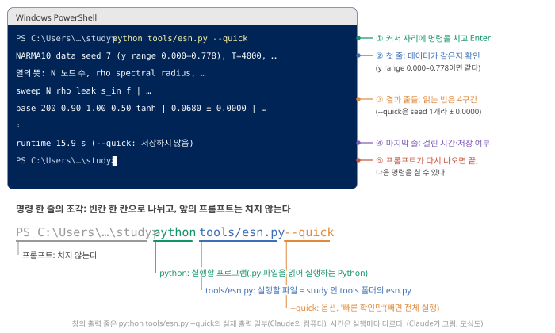
' 뒤에 노란 글자로 'python tools/esn.py --quick', 그 아래 결과 줄들(NARMA10 data seed 7 …, 열의 뜻, sweep 머리, base 200 0.90 1.00 0.50 tanh | 0.0680 ± 0.0000 | …), 'runtime 15.9 s (--quick: 저장하지 않음)', 그리고 다시 나타난 프롬프트와 커서. 오른쪽에 ①–⑤ 설명. 아래에는 명령 한 줄을 프롬프트·python·tools/esn.py·--quick 네 조각으로 나눠 각각의 뜻을 단 그림" class="figure-img">python tools/esn.py --quick의 실제 출력 일부를 줄인 것이고 시간은 실행마다 다릅니다. Claude의 컴퓨터에서 나온 출력. (Claude가 그림, 모식도)어디에 치나, 무엇을 치나. 프롬프트 끝(> 바로 뒤)에서 깜빡이는 짧은 막대(커서)가 글자가 들어갈 자리입니다. 창을 한 번 클릭해 두고 치면 됩니다. 이 자료의 회색 상자 안 글자가 칠 명령 전체이고, 창에 이미 보이는 PS …>는 컴퓨터가 써 둔 것이라 치지 않습니다. 직접 쳐도 되고, 회색 상자의 글자를 복사해 창에 붙여 넣어도 됩니다(Ctrl + V 또는 창 안에서 마우스 오른쪽 클릭). 명령 한 줄은 빈칸으로 나뉜 조각으로 되어 있습니다(그림 1 아래).
python: 실행할 프로그램. 사람이 쓴.py파일을 읽어 한 줄씩 실행해 주는 Python 프로그램입니다.tools/esn.py: 실행할 파일. "지금 폴더(study) 안의tools폴더 안의esn.py"라는 길, 곧 경로(path)이고,/는 폴더와 그 안의 것을 나누는 표시입니다. 이 경로는 지금 폴더에서 출발하므로, 지금 폴더가 study가 아니면 길이 맞지 않아 실행되지 않습니다.--quick: 프로그램에 주는 선택 사항, 곧 옵션(option)입니다. 프로그램 이름 뒤에 붙여 동작을 바꾸는 말을 통틀어 명령줄 인수(argument)라고도 부릅니다.--quick은 "빠른 확인만 하라"는 뜻이고, 빼면 전체 실행입니다.
Enter를 누르면 실행되는 동안 결과 줄이 하나씩 나타나고, 프롬프트 PS …\study>가 다시 나타나면 끝난 것입니다. 그때 다음 명령을 칠 수 있습니다.
순서. 다섯 단계를 하나씩 엽니다. 단계 4는 돌아가는지 확인하는 것이고, 4구간부터 읽을 출력은 단계 5의 전체 실행에서 나옵니다.
단계 1 — study 폴더에서 터미널 열기. 파일 탐색기로 OneDrive › Desktop › Neuromorphic ionotronics › study 폴더를 엽니다(이 사이트의 파일들이 있는 폴더, 안에 tools, lessons 폴더가 보임). 창 위쪽의 주소 표시줄(폴더 경로가 적힌 칸)을 한 번 클릭하고, 경로를 지운 자리에 powershell이라고 쓰고 Enter를 누릅니다. 그 폴더에서 PowerShell 창이 열립니다. (또는 폴더의 빈 곳을 마우스 오른쪽 버튼으로 눌러 "터미널에서 열기"를 고릅니다.) 프롬프트가 …\study>로 끝나는지 확인하세요.
단계 2 — Python 확인. 아래 명령을 그대로 치고 Enter.
python --versionPython 3.12.10처럼 버전이 한 줄 나오면 됩니다(Claude의 컴퓨터는 3.12.10이었습니다. 3.9 이상이면 대개 될 것입니다 해석). "Python was not found"(Python을 찾을 수 없음) 같은 말이 나오거나 Microsoft Store 창이 열리면, 먼저 py --version을 쳐 보세요. 이것이 버전을 보여 주면 Python은 있고 부르는 이름만 다른 것이므로, 이 자료의 모든 명령에서 맨 앞 python을 py로 바꿔 치면 됩니다(py는 python.org 설치본에 딸린 실행기). 둘 다 안 되면 Python이 설치되지 않은 것이므로, python.org에서 설치하거나 연구실의 도움을 받으세요.
단계 3 — numpy 확인. numpy는 행렬(숫자를 행과 열로 늘어놓은 표, D7 기초: 벡터·행렬) 계산을 빠르게 해 주는 Python 부품, 곧 패키지(package)입니다.
python -c "import numpy; print(numpy.__version__)"-c는 "뒤의 따옴표 안에 적은 짧은 코드를 바로 실행하라"는 옵션이고, 그 코드는 numpy를 불러와(import) 버전을 화면에 찍습니다(print). 2.5.4 같은 숫자가 나오면 됩니다. ModuleNotFoundError(그런 부품이 없음)가 나오면 python -m pip install numpy로 설치합니다(인터넷 필요). pip은 패키지를 내려받아 설치하는 프로그램이고, -m pip은 "이 python으로 pip을 실행하라"는 옵션입니다. numpy 버전이 다르면 결과가 셋째 자리 아래에서 조금 다를 수 있습니다.
단계 4 — 빠른 확인 실행.
python tools/esn.py --quickreservoir의 연결 세기 \(W\) 같은 값은 난수로 정합니다(D8 기초: 상태 갱신식). 컴퓨터의 난수는 seed(씨앗 번호)에서 만들어지며, 같은 seed를 주면 같은 "난수"가 다시 나와 결과를 그대로 재현할 수 있습니다. --quick은 seed 1로 만든 reservoir 한 벌로만 돌리는 확인용이고 결과를 저장하지 않습니다. Claude의 컴퓨터에서 16–45초 걸렸습니다(세 번 실행, 컴퓨터 성능과 전원 상태에 따라 더 걸릴 수 있음). 첫 줄이 아래와 같으면 데이터가 같게 만들어진 것입니다.
NARMA10 data seed 7 (y range 0.000–0.778), T=4000, washout 100, train 2000, test 1900; reservoir seeds [1]이 줄의 낱말(seed 7, washout, train, test)은 3·4구간에서 하나씩 읽습니다. 그 아래에 열 머리와 결과 줄들이 하나씩 나타나는데, 지금은 숫자를 읽지 않아도 됩니다(4구간).
마지막 줄은 runtime 42.4 s (--quick: 저장하지 않음)처럼(숫자는 실행마다 다릅니다) 걸린 시간과 "저장하지 않음"입니다. 확인용이라 결과 파일을 바꾸지 않습니다. 그 아래 프롬프트가 다시 나오면 끝입니다.
단계 5 — 전체 실행.
python tools/esn.pyseed 1, 2, 3으로 reservoir를 세 벌 만들어 모든 조건을 돌리고 결과를 tools/esn_results.json에 저장합니다(세 벌을 돌리는 이유는 4구간: 난수에 따라 결과가 얼마나 흔들리는지 보려고). Claude의 컴퓨터에서 57초와 133초가 걸렸습니다(두 번 실행, 다른 작업과 겹치면 더 걸림). 마지막 줄은 runtime 56.6 s -> …\tools\esn_results.json처럼 걸린 시간과 저장한 파일의 위치입니다. 내 답의 실험 기록 표는 이 실행의 출력으로 채웁니다(4구간).
안 될 때. Python이 멈추면 여러 줄의 오류 메시지가 나옵니다. Traceback (most recent call last):로 시작하는 경우 원인은 맨 마지막 줄에 적혀 있으니 그 줄부터 읽으세요. 자주 보는 것들:
| 화면에 나온 말 | 뜻 | 할 일 |
|---|---|---|
can't open file '…\tools\esn.py': [Errno 2] No such file or directory |
지금 폴더 안에 tools/esn.py가 없다(다른 폴더에서 쳤다) |
프롬프트가 …\study>로 끝나는지 본다. 아니면 창을 닫고 단계 1부터 다시 |
ModuleNotFoundError: No module named 'numpy' |
numpy가 설치되지 않았다 | python -m pip install numpy(인터넷 필요) 뒤 다시 실행 |
Python was not found… 또는 Microsoft Store 창 |
python이라는 이름으로 Python을 못 찾았다 |
단계 2의 py --version |
| 아무것도 안 바뀌고 오래 멈춘 것 같다 | 계산 중일 수 있다(전체 실행은 Claude의 컴퓨터에서 1–2분 남짓) | 5분쯤 기다린다. 그래도 그대로면 Ctrl + C로 멈추고 다시 실행 |
| 그 밖의 오류 | 마지막 줄을 그대로 복사해 Claude나 연구실에 보여 준다 |
오류 문구는 Python 버전에 따라 앞부분이 조금 다를 수 있습니다. Claude의 컴퓨터에서 일부러 틀리게 쳐서 확인한 문구.
터미널 요령 넷. (1) 명령은 띄어쓰기와 -- 같은 기호까지 그대로 칩니다. (2) 위쪽 화살표 키(↑)를 누르면 방금 친 명령이 다시 나옵니다. (3) 실행 중에 멈추고 싶으면 Ctrl + C. (4) 출력을 파일로 남기고 싶으면 python tools/esn.py > 내결과.txt처럼 > 뒤에 파일 이름을 씁니다(그러면 화면에는 안 나오고 study 폴더에 파일이 생깁니다). 이 >는 프롬프트 끝의 >와 다른 것으로, "화면 대신 이 파일로 보내라"는 기호입니다(출력 방향 바꾸기, redirection). 컴퓨터 설정에 따라 파일 속 한글이나 ±·λ 같은 기호가 깨져 보일 수 있지만 숫자는 그대로입니다. [미확인: Claude의 창에서는 깨지지 않았고, 다른 설정에서는 확인하지 않음]
여기까지: study 폴더에서 PowerShell을 열고, python tools/esn.py --quick의 첫 줄과 마지막 줄을 확인하고, 오류가 나면 마지막 줄로 원인(폴더, numpy, py)을 찾을 수 있다. 다음: 그 프로그램 안에서 무엇이 계산되는지(코드의 지도와 식).
코드의 지도. 코드를 고칠 필요는 없지만, 무엇이 어디서 일어나는지는 알아 두면 출력을 읽기 쉽습니다. 파일은 다섯 덩어리입니다(그림 2). 각 덩어리 안의 주석(# 뒤의 한국어 설명)이 그 줄이 하는 일을 적고 있으니, 메모장이나 VS Code로 tools/esn.py를 열어 함수 이름을 그림과 맞춰 보세요.
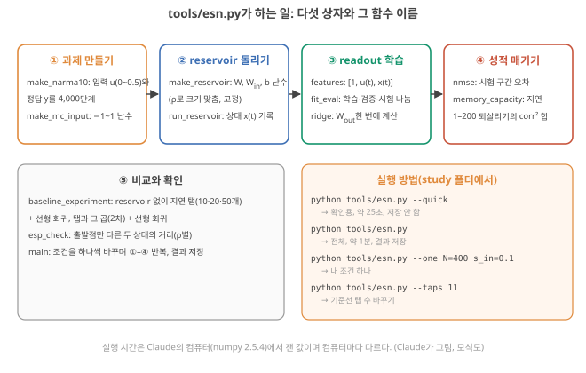
tools/esn.py의 지도. ①–④가 D8에서 손으로 한 일(상태 갱신 → ridge readout → 시험 데이터 채점)을 노드 200개로 하는 부분이고, ⑤가 D9(ESP)와 오늘 6구간(기준선)을 위한 부분이다. 실행 명령 넷은 4·5구간에서 쓴다. (Claude가 그림, 모식도)코드가 계산하는 식. D9에서 본 leak 있는 갱신식(D9 기초: leak)에 입력 크기 \(s_{in}\)과 치우침 \(b\)를 더한 것입니다. Stepney가 소개한 leak 있는 ESN(식 3)을, 입력 첨자를 \(u(t+1)\)로 쓰는 저자별 변형으로 적었습니다. Stepney 2024, p.668
\[ x(t+1) = (1-a)\,x(t) + a\,\tanh\!\big(\rho\,W x(t) + s_{in}\,W_{in}\,u(t+1) + b\big), \qquad y(t) = W_{out}\cdot[1,\ u(t),\ x(t)] \]
기호는 모두 D8–D10에서 본 것이고, 5구간에서 바꿀 '손잡이'가 여기 다 들어 있습니다.
- \(x(t)\): 노드 \(N\)개(기본 200개)의 상태 목록(D8 기초: 상태 갱신식).
- \(W\)와 ρ: \(W\)는 노드끼리의 연결 세기를 적은 \(N \times N\) 난수 표이고, \(\rho W\)는 "가장 큰 배율(spectral radius)이 1이 되게 맞춘 표에 ρ를 곱해 배율을 정확히 ρ로 만든 것"입니다(D9 기초: spectral radius). 코드의
make_reservoir가 이 일을 합니다. - \(a\): leak. 매 단계 새로 계산한 값을 얼마나 섞을지 정하는 비율로, 1이면 매번 새 값으로 갈아 치우고 작을수록 옛 상태를 많이 남깁니다(D9 기초: leak).
- \(W_{in}\): 입력 하나를 노드마다 다른 무게(−1~1 난수)로 나눠 주는 목록(D10 기초: 입력 마스크).
- \(s_{in}\): 입력 크기. 입력에 곱하는 숫자 하나로, 3구간 '입력 스케일링'에서 설명합니다.
- \(b\): 노드마다 다른 작은 치우침(−0.2~0.2 난수, D10 5구간의 "치우침").
- \(W_{out}\): readout 가중치. \(W\), \(W_{in}\), \(b\)는 처음에 난수로 정한 뒤 고정하고, 학습하는 것은 \(W_{out}\)뿐입니다(D8 기초: ridge, 3구간).
입력 첨자가 \(u(t+1)\)인 것은 "새 상태 \(x(t+1)\)은 그 단계에 들어온 입력까지 받은 뒤의 상태"라는 약속입니다(D9 5구간에서 식을 번호 하나 당겨 적은 것과 같은 약속). 그래서 readout은 상수 1, 지금 입력 \(u(t)\), 그 입력까지 받은 상태 \(x(t)\)의 200개 값, 모두 202개의 숫자(특징)에 가중치를 곱해 더합니다.
- study 폴더 주소 표시줄에
powershell→python --version, numpy 확인 →python tools/esn.py --quick(reservoir 한 벌, 저장 안 함) →python tools/esn.py(seed 1·2·3의 세 벌, 결과 저장). Claude의 컴퓨터에서 각각 16–45초, 1–2분 남짓. - 첫 줄이
NARMA10 data seed 7 (y range 0.000–0.778), …이면 데이터가 같다. - 명령은 프롬프트 뒤 커서 자리에, 프롬프트(
PS …>)는 치지 않는다. 조각은 프로그램(python) · 파일(tools/esn.py) · 옵션(--quick). 프롬프트가 다시 나오면 끝. - 안 되면 오류의 마지막 줄을 읽는다: 폴더가 틀림(
can't open file), numpy 없음(ModuleNotFoundError),python대신py. - 코드는 과제 → reservoir → readout → 채점 → 비교·확인의 다섯 덩어리. 식은 D9의 leak 식에 입력 크기 \(s_{in}\)과 치우침 \(b\)를 더한 것(Stepney 식 3의 변형 Stepney 2024, p.668–669). 학습하는 것은 \(W_{out}\)뿐.
2. 과제와 잣대: NARMA10, NMSE, memory capacity, 지연 탭 기준선
이 구간을 읽고 나면 NARMA10의 식에서 한 걸음을 손으로 계산하고, NMSE와 MC를 작은 숫자로 계산하며, 지연 탭 기준선의 특징 수(탭 20개 + 곱 = 231개)를 셀 수 있다.
출력에 나오는 숫자는 네 가지 개념으로 만들어집니다. 순서는 과제(NARMA10: 무엇을 맞히게 하나) → 오차 척도(NMSE: 얼마나 맞혔나) → 기억 척도(MC: 지난 입력을 얼마나 되살리나) → 비교 대상(지연 탭 기준선: reservoir 없이도 그만큼 되나)입니다. 숫자는 모두 손으로 따라 계산할 수 있게 작게 잡았습니다.
NARMA10 과제
D11에서 식만 미리 보았던 과제입니다(D11 1구간). 여기서 항마다의 뜻을 풉니다.
무엇을 시키나. 입력 \(u\)를 받아, 정해진 규칙(NARMA10 계)이 같은 입력에 대해 내놓을 출력 \(y\)를 흉내 내는 과제입니다. 실행 장면으로는 이렇습니다. reservoir에는 매 단계 \(u\)만 넣고 \(y\)는 보여 주지 않습니다. readout이 매 단계 상태를 보고 \(y(t)\)의 값을 말하도록 학습 구간에서 가중치를 맞추고, 시험 구간에서 readout이 말한 값(예측)을 진짜 \(y\)(정답)와 비교해 채점합니다. Stepney는 이것을 "흉내(imitation) 과제"로 분류하고, RC 문헌에서 아마 가장 흔한 벤치마크라고 씁니다. Stepney 2024, p.676 Liang도 NARMA를 비선형 계 근사와 기억을 동시에 시험하는 널리 받아들여진 벤치마크로 소개합니다. Liang 2024, p.200
규칙. 입력 \(u\)는 0~0.5 사이 균등 난수(그 범위의 어느 값이나 나올 가능성이 같은 무작위 수)이고,
\[ y(t+1) = 0.3\,y(t) + 0.05\,y(t)\sum_{i=0}^{9} y(t-i) + 1.5\,u(t-9)\,u(t) + 0.1 \]
(Atiya & Parlos 2000의 매개변수 (0.3, 0.05, 1.5, 0.1)와 입력 범위 0.5 Stepney 2024, p.676). 항마다 하는 일:
- \(0.3\,y(t)\): 바로 전 출력의 30%가 남는다(남는 비율 \(d\) = 0.3짜리 흐려지는 기억, D9 기초: fading memory). 지금 출력 \(y(t)\)로 다음 출력 \(y(t+1)\)을 만드는 식이라, 맞히려면 \(y\)의 과거도 알아야 하는데 reservoir는 \(y\)를 보지 못하므로 결국 지난 입력들에서 그것을 다시 만들어 내야 합니다.
- \(0.05\,y(t)\sum y\): 지금 출력과 최근 10개 출력의 합의 곱(2차 비선형 + 10단계 기억).
- \(1.5\,u(t-9)\,u(t)\): 지금 입력과 9단계 전 입력의 곱(2차 비선형 + 기억). 이 곱이 들어가는 출력은 \(y(t+1)\)이므로, 출력 시점에서 보면 1단계 전과 10단계 전 입력의 곱입니다. D10의 지연 XOR(두 입력이 서로 다를 때만 1이라 곱 같은 비선형이 필요한 과제, D10 기초: XOR)을 10단계로 늘린 것과 같은 성격입니다.
- \(0.1\): 상수.
Stepney는 이 식의 (2차) 비선형이 출력끼리의 곱(\(y(t)\,y(t-i)\)) 항과 입력끼리의 곱(\(u(t-9)\,u(t)\)) 항에서 오고, 이전 10단계의 기억이 필요하다고 정리합니다. Stepney 2024, p.676 Stepney는 출력을 \(x\), 과제의 길이를 \(N\)으로 적는다. 이 교재에서 \(x\)는 reservoir 상태, \(N\)은 노드 수라서 D11처럼 \(y\)와 10으로 바꿔 적었다.
한 걸음 손 계산. 최근 출력 10개가 모두 0.3이고(\(y(t) = 0.3\), 합 3.0), \(u(t-9) = 0.4\), \(u(t) = 0.2\)라면
- \(0.3 \times 0.3 = 0.09\)
- \(0.05 \times 0.3 \times 3.0 = 0.045\)
- \(1.5 \times 0.4 \times 0.2 = 0.12\)
- 더하면 \(0.09 + 0.045 + 0.12 + 0.1 = 0.355\)
주의 둘. (1) 이 식은 가끔 값이 폭주합니다. Stepney는 표준 NARMA10 설정도 가끔 발산한다고 적고 Stepney 2024, p.676, tools/esn.py는 값이 10을 넘으면 데이터 seed를 바꿔 다시 만듭니다(우리 데이터는 seed 7에서 문제없이 만들어졌고, 출력 범위는 0–0.778). (2) 문헌마다 매개변수와 입력 범위가 달라 숫자를 바로 비교하기 어렵고, 무엇을 재는지도 정확하지 않아 조심해서 써야 한다고 Stepney는 경고합니다. Stepney 2024, p.677 그래서 오늘은 NARMA10과 함께 MC를 봅니다.
읽는 법. 아래 원문 그림은 위 규칙으로 만든 \(y\)가 시간에 따라 어떻게 생겼는지 보여 줍니다. 가로축은 시간 단계, 세로축은 출력 값이고, 위 칸의 파란 곡선만 보면 됩니다. 이것이 오늘의 NARMA10(Atiya & Parlos 매개변수, 입력 범위 0.5)이고, 세로축 값이 대략 0.15–0.75 사이를 오르내립니다. 같은 입력인데 입력 범위만 0.2로 줄인 주황 곡선은 0.2 근처에 납작하게 붙어 있습니다. "NARMA10"이라는 같은 이름이라도 설정이 다르면 전혀 다른 신호라는 것을 확인하세요.

오차 척도 NMSE (정규화 평균 제곱 오차)
D11에서 이미 계산한 것. D11의 용량 \(C = 1 - \langle(f-\hat f)^2\rangle/\mathrm{Var}(f)\)에서 1에서 빼는 부분, 곧 "오차 제곱의 평균 ÷ 정답의 분산"이 여기서 부르는 NMSE입니다(D11 기초: 목표 하나의 용량). 평균 \(\langle\cdot\rangle\), 분산, 표준편차도 거기서 숫자 넷으로 계산했습니다. 여기서는 이름과 실습에서의 쓰임을 붙입니다.
왜 필요한가. "오차 0.02"라는 말은 정답이 0.4 근처를 오가는지 400 근처를 오가는지 모르면 뜻이 없습니다. 정답이 원래 얼마나 흔들리는지로 나눠 주면 단위와 크기에 상관없이 비교할 수 있습니다.
정의. 정답은 NARMA10이 만든 진짜 \(y\), 예측은 readout이 말한 값입니다. 시험 구간의 시간 단계마다 둘의 차이(오차)를 구해
\[ \text{NMSE} = \frac{\text{평균}\big[(\text{정답} - \text{예측})^2\big]}{\text{정답의 분산}} \]
분자의 "평균"은 D11의 \(\langle \cdot \rangle\)와 같은 뜻입니다(시간 단계마다 계산해 단계 수 \(n\)으로 나눔).
분산은 "정답이 자기 평균에서 얼마나 흩어져 있나"(평균에서 뺀 값의 제곱의 평균)입니다. 여기서는 분자의 "평균"과 맞춰 개수 \(n\)으로 나눕니다(코드의 np.var도 \(n\)으로 나눔). 표본 분산은 \(n-1\)로 나누지만, 시험 구간이 1,900단계라 차이는 무시할 만합니다(분산을 더 깊게: D13 기초: 분산·상관²). Stepney의 식 15와 같고, 예측을 늘 정답의 평균값으로 내면 NMSE = 1이라고 적습니다. Stepney 2024, p.676 그래서 0이면 완벽, 1이면 "아무것도 모르고 평균만 말하는 것"과 같습니다. 문헌에서 가장 흔한 것은 그 제곱근 NRMSE입니다. Stepney 2024, p.676 D11의 용량 \(C\)는 \(1 - \text{NMSE}\)였습니다.
작은 숫자로. 정답 (0.4, 0.5, 0.3, 0.6), 예측 (0.42, 0.47, 0.33, 0.58).
- 오차: (0.02, −0.03, 0.03, −0.02), 제곱 평균 \(= (0.0004 + 0.0009 + 0.0009 + 0.0004)/4 = 0.00065\).
- 정답의 평균 0.45, 평균에서 뺀 값 (−0.05, 0.05, −0.15, 0.15), 제곱 평균(분산) \(= (0.0025 + 0.0025 + 0.0225 + 0.0225)/4 = 0.0125\).
- NMSE \(= 0.00065/0.0125 = 0.052\). NRMSE \(= \sqrt{0.052} = 0.23\).
- 확인: 예측을 모두 정답의 평균 0.45로 내면 오차는 (−0.05, 0.05, −0.15, 0.15)로 2단계의 "평균에서 뺀 값"과 똑같고, 그래서 제곱 평균이 분산과 같은 0.0125라 NMSE \(= 0.0125/0.0125 = 1\)입니다. "평균만 말하면 1"이 이렇게 나옵니다.
오늘 기본 ESN의 NARMA10 NMSE가 이 정도(0.053)입니다. NMSE 0.05가 눈으로 어느 정도인지 그림 3에서 보세요. 검정이 정답, 파란 점선이 예측이고, 아래 빨간 선은 둘의 차이입니다.
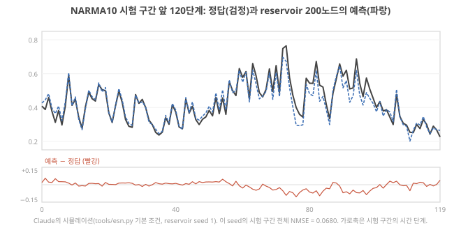
여기까지: NARMA10 한 걸음(0.355)을 손으로 계산하고, NMSE를 숫자 넷 예(0.00065 ÷ 0.0125 = 0.052)로 계산해 "0이면 완벽, 1이면 평균만 말하는 것"을 말할 수 있다. 다음: 오차와 따로, 기억만 재는 MC.
memory capacity(MC) 측정 방법
무엇을 재나. "이 reservoir는 \(k\)단계 전 입력을 지금 상태에서 얼마나 되살리나"를 \(k\) = 1, 2, 3, …에 대해 재서 더한 것입니다. D9 5구간의 "기억 예산"과 D11의 "차수 1 용량"이 바로 이것입니다.
순서. Liang 2024, p.200 Stepney 2024, p.679
- 입력으로 서로 독립인 난수를 넣는다(
tools/esn.py는 −1~1 균등 난수). 독립이어야 지금 입력에서 과거 입력을 "추측"할 단서가 없고, 상태에 남은 흔적만 잴 수 있다. - 지연 \(k\)마다 목표를 "\(k\)단계 전 입력 \(u(t-k)\)"로 두고 readout을 학습한다.
- 시험 구간에서 목표와 readout 출력의 상관계수(두 숫자 열이 함께 오르내리는 정도, −1~1, D9 5구간)를 제곱한다: \(MC_k\)(0~1). D11의 용량 \(C\) = 1 − NMSE와 시험 구간에서 거의 같은 양입니다(D11 기초 단계 5).
- 모두 더한다: \(MC = \sum_k MC_k\). 코드는 \(k\) = 1–200을 더한다.
작은 숫자로. \(MC_k\)가 \(k\) = 1–7에서 1.0, 0.99, 0.95, 0.8, 0.5, 0.2, 0.05이고 그 뒤는 0이라면 \(MC = 4.49\)입니다. "약 4.5개의 지난 입력을 온전히 기억하는 것과 같은 양"이라고 읽습니다.
상한과 주의. Stepney는 Jaeger(2002)가 독립 난수 입력에서 \(MC \le N\)(노드 수)임을 보였다고 씁니다. Stepney 2024, p.679 그리고 \(k\)가 클수록 \(MC_k\)는 작고 잡음에 가까워지므로 실제로는 어디서 끊는다고 적습니다. Stepney 2024, p.679 Singh 2026은 합계 하나가 아니라 \(MC_k\) 대 \(k\)의 분포 전체를 함께 보고하라고 권하는데, 합이 비슷해도 기억이 닿는 범위가 다를 수 있기 때문입니다. Singh 2026, p.13 그림 4가 그 분포입니다.
그림 4를 읽는 법. 가로축은 지연 \(k\)(몇 단계 전 입력인가), 세로축은 \(MC_k\)(0~1)이고, 곡선 아래 넓이가 MC입니다. 곡선 넷은 5구간에서 바꿔 볼 조건들이라 지금은 파란 선(기본 설정)만 보세요. 파란 선은 \(k\) = 19에서 처음 0.5 아래로 떨어집니다. 이것이 "기억이 닿는 범위"의 대략적인 끝이고, NARMA10이 요구하는 10단계(가로축 10)보다 깁니다. 세로 점선은 바로 아래에서 설명할 기준선이고, 주황·회색·빨강 곡선은 5구간의 손잡이 2·4·5에서 다시 봅니다.
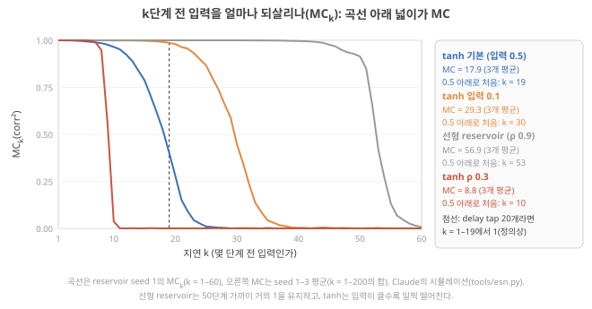
지연 탭 + 선형 회귀 기준선
무엇인가. reservoir를 빼고, 지난 입력들을 그대로 저장해 readout에 넣는 방법입니다. 탭 \(k\)개면 특징은 \([1,\ u(t),\ u(t-1),\ \dots,\ u(t-k+1)]\), 즉 \(k + 1\)개이고, 여기에 reservoir와 같은 ridge readout(D8 기초)을 그대로 씁니다. "탭(tap)"은 수도관(지연선)의 여러 자리에서 물을 뽑는 꼭지처럼, 지연된 신호를 자리마다 뽑아 쓴다는 뜻입니다.
2차 판. 탭들끼리의 곱(제곱 포함)까지 특징으로 넣으면 2차 비선형도 readout이 직접 다룹니다. 특징 수는 \(1 + k + k(k+1)/2\): 탭 10개면 \(1 + 10 + 55 = 66\), 탭 20개면 \(1 + 20 + 210 = 231\)입니다. 탭 3개로 한 시각을 적어 보면, \(u(t), u(t-1), u(t-2)\) = 0.2, 0.4, 0.1일 때 선형 판의 특징은 1, 0.2, 0.4, 0.1, 2차 판은 여기에 제곱 셋(0.04, 0.16, 0.01)과 서로 다른 둘의 곱 셋(0.2 × 0.4 = 0.08, 0.2 × 0.1 = 0.02, 0.4 × 0.1 = 0.04)을 더해 10개(\(1 + 3 + 3 \times 4/2\))입니다. 곱의 개수 \(k(k+1)/2\)는 "탭 \(k\)개에서 둘을 고르는 방법 + 제곱 \(k\)개"입니다.
왜 필요한가. D6에서 말한 기준선입니다. 기억을 저장으로 얻는 가장 정직한 방법(D9 1구간)이고, reservoir가 이보다 낫지 않다면 "reservoir의 동역학이 계산에 기여했다"고 말할 수 없습니다. Singh 2026은 물리 reservoir의 기여를 같은 입력 부호화, 같은 데이터 나누기, 같은 정규화, 가능하면 같은 특징 수와 같은 readout을 쓴 기준 사례와 비교하라고 씁니다. Singh 2026, p.8
확인용 계산. 탭 20개는 \(u(t-1)\)부터 \(u(t-19)\)까지를 그대로 들고 있으므로, MC를 재면 \(k\) = 1–19에서 1, 그 뒤는 0이라 약 19가 나와야 합니다(그림 4의 세로 점선). 실제 출력은 19.06(나머지 0.06은 유한한 데이터에서 생기는 우연한 상관)입니다. 탭 10개는 9.08, 50개는 49.03. 내 출력에서도 이 숫자가 나오면 MC 계산이 제대로 돌아간 것입니다.
탭 10개 기준선은 \(u(t), u(t-1), \dots, u(t-9)\)를 듭니다. NARMA10 식의 \(t\)를 한 단계 당겨 적으면 \(y(t) = 0.3\,y(t-1) + \cdots + 1.5\,u(t-10)\,u(t-1) + 0.1\)이라, 지금 정답 \(y(t)\)를 맞히려면 \(u(t-1)\)과 \(u(t-10)\)의 곱이 필요합니다. 탭 10개의 NARMA10 성적은 좋을까요, 나쁠까요? 출력에서 확인하세요.
- NARMA10: 2차 곱 + 10단계 기억을 요구하는 흉내 과제 Stepney 2024, p.676 Liang 2024, p.200. 설정이 다르면 숫자 비교 불가 Stepney 2024, p.677. 손 계산 예 0.355.
- NMSE = 평균 제곱 오차 ÷ 정답의 분산. 평균만 말하면 1 Stepney 2024, p.676. 예: 0.00065/0.0125 = 0.052.
- MC = 독립 난수 입력의 \(k\)단계 전 값을 되살리는 corr²의 합, \(\le N\) Stepney 2024, p.679. 분포 전체를 보라 Singh 2026, p.13.
- 지연 탭 기준선: 특징 \(k+1\)개(2차는 \(1 + k + k(k+1)/2\)). 탭 20개의 MC ≈ 19가 계산 확인용이다. 같은 특징 수로 비교한다 Singh 2026, p.8.
3. 데이터를 다루는 기초: 정규화·입력 크기·washout·나누기
이 구간을 읽고 나면 정규화, 입력 스케일링, washout, 학습/검증/시험 나누기가 각각 무엇을 막는지 말하고, tools/esn.py의 s_in, WASHOUT, T_TRAIN, LAMBDAS가 그 어느 것에 해당하는지 짚을 수 있다.
전처리 기초: 정규화·입력 스케일링·washout·훈련/시험 나누기
넷은 각각 다른 문제를 막습니다. 정규화는 신호마다 크기가 달라 생기는 혼란을, 입력 스케일링은 노드가 너무 곧게만 움직이거나 너무 포화하는 것을, washout은 처음 상태의 흔적을, 나누기는 외운 것을 실력으로 착각하는 것을 막습니다. 넷 가운데 washout과 나누기는 D7–D9에서 이미 본 것이라 짧게 다시 말하고 링크를 겁니다.
정규화(normalization). 원래 신호의 단위와 크기를 정해진 범위로 맞추는 일입니다. 예: 심전도 값 0.2, 0.8, 1.4 mV를 −1~1로 맞추려면 "(값 − 최솟값) ÷ (최댓값 − 최솟값) × 2 − 1"을 계산합니다. 0.2 → −1, 0.8 → 0, 1.4 → +1. Zhong 2022는 박동 하나하나를 진폭이 [−1, 1]이 되게 정규화했습니다. Zhong 2022, p.675 왜 하나? 사람마다, 측정마다 크기가 다른 신호를 같은 reservoir에 넣어도 같은 운전 영역(아래 입력 스케일링)에서 움직이게 하기 위해서입니다. 해석 주의: 최솟값·최댓값(또는 평균·표준편차)은 학습 데이터에서만 구해야 합니다. 시험 데이터로 구하면 시험 데이터의 정보가 학습에 새어 들어갑니다. 해석
입력 스케일링(input scaling). 정규화한 입력에 숫자 하나(\(s_{in}\))를 곱해 reservoir에 들어가는 세기를 정합니다. D10–D11에서 보았듯(D11 기초: 상충) 이 숫자가 노드가 \(\tanh\)의 직선 구간에서 움직일지(거의 선형, 잡음에 묻힘) 휘는 구간까지 갈지(비선형, 기억 감소)를 정합니다. Stepney는 입력이 reservoir 동역학을 흔들 만큼 크되 포화시키지 않을 만큼 작게 맞추고, spectral radius와 함께 조절하라고 씁니다. Stepney 2024, p.668 Liang도 시간다중화 뒤에 치우침과 크기 조절을 더해 최적의 입력 범위를 찾을 수 있다고 적습니다. Liang 2024, p.198 tools/esn.py에서는 s_in(기본 0.5)이 이것이고, NARMA10 입력(0~0.5)은 따로 정규화하지 않고 그대로 \(s_{in}\)을 곱합니다.
washout. 처음 몇 단계는 처음 상태(코드에서는 모두 0)의 흔적이 남아 있으므로 학습·평가에서 버립니다(D7 3-1: washout, D9 3구간: washout과 ESP). 코드 맨 위의 설정값 WASHOUT = 100이 이것입니다.
훈련/검증/시험 나누기. 남은 데이터를 시간 순서대로 셋으로 나눕니다. 먼저 그림 5에서 칸 넷의 순서와 길이(단계 수에 비례)를 보세요.
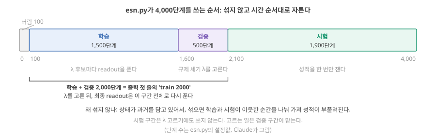
그림의 순서를 글로 따라가면 이렇습니다.
- 처음 100단계(washout)를 버린다.
- 다음 1,500단계(학습)로, ridge의 \(\lambda\)(가중치가 지나치게 커지는 것을 벌하는 세기, D8 기초: ridge의 λ) 후보
LAMBDAS(10⁻⁹, 10⁻⁷, 10⁻⁵, 10⁻³, 10⁻¹) 다섯 개마다 readout을 푼다. - 다음 500단계(검증)에서 다섯 readout의 NMSE를 재어 가장 작은 \(\lambda\) 하나를 고른다.
- 고른 \(\lambda\)로 학습 + 검증 2,000단계 전체에서 readout을 다시 푼다. 출력 첫 줄의
train 2000이 이 2,000단계이고, 코드의 설정값T_TRAIN = 2000입니다. - 마지막 1,900단계(시험)로 성적을 한 번 잰다. 이렇게 \(\lambda\)는 검증으로 고르고 성적은 시험으로 재는 것이 D8에서 본 순서입니다(D8 4-5).
시계열은 섞지 않고 시간 순서대로 나눕니다. 상태가 과거를 담고 있어 섞으면 학습과 시험이 서로의 이웃 시점을 공유하게 되고, 실제 사용(앞으로 올 데이터)과도 다르기 때문입니다. 해석
소자 논문의 예. Zhong 2022는 박동 10,000개 중 무작위 1,000개로 학습하고 나머지 9,000개로 시험했고 Zhong 2022, p.675, 손동작은 600개 학습, 300개 시험으로 나눴습니다. Zhong 2022, p.677 여기서 나눈 단위는 시간 단계가 아니라 박동·동작 하나하나입니다.
MC는 따로 나눕니다. MC는 따로 만든 −1~1 난수 입력으로 재며, 지연 200까지의 목표 \(u(t-200)\)을 만들 수 있도록 처음 200단계를 버리고, 다음 2,000단계로 학습, 나머지 1,800단계를 시험으로 씁니다(\(\lambda\)는 10⁻⁷로 고정, 코드의 memory_capacity).
"학습 데이터에서 잘 맞으면 된다" — D6과 D8에서 본 대로, 학습 데이터 오차는 readout이 외우기만 해도 줄어듭니다. 출력의 모든 NMSE와 MC는 시험 구간에서 잰 값입니다. 그리고 \(\lambda\)도 시험 구간이 아니라 검증 구간으로 골랐습니다. 시험 구간을 보고 설정을 고르면 시험 구간도 학습에 쓴 셈이 됩니다.
- 정규화: 크기를 정해진 범위로(예: [−1, 1] Zhong 2022, p.675). 통계는 학습 데이터에서만 해석.
- 입력 스케일링 \(s_{in}\): 운전 영역을 정한다. 흔들 만큼 크게, 포화시키지 않게 Stepney 2024, p.668.
- washout 100단계 → 학습 1,500(λ 후보마다 풀기) → 검증 500(λ 고르기) → 고른 λ로 2,000단계에서 다시 풀기(
train 2000) → 시험 1,900. 시간 순서대로 나눈다.
4. 출력 읽기: 각 줄과 숫자의 뜻, 실험 기록 표 채우기
이 구간을 읽고 나면 전체 실행 출력의 다섯 종류 줄(데이터 정보, 열 머리, ESN 결과, 기준선, ESP 확인)을 읽고, 각 숫자를 내 답의 실험 기록 표 어느 칸에 옮길지 알 수 있다.
먼저 직접 돌려서 내 출력을 앞에 두고 아래를 읽으세요. Claude의 출력은 맨 아래 접힌 상자에 있습니다. 내 것과 셋째 자리까지 같거나 아주 가깝다면 정상입니다.
줄 1 — 데이터 정보. NARMA10 data seed 7 (y range 0.000–0.778), T=4000, washout 100, train 2000, test 1900; reservoir seeds [1, 2, 3]. 앞에서부터 NARMA10 데이터를 만든 seed(씨앗 번호, 1구간 단계 4)가 7, 정답 \(y\)의 범위, 전체 길이 4,000단계, 버린 길이 100, 학습 + 검증 길이 2,000, 시험 길이 1,900(그림 5), 그리고 reservoir를 만든 seed 세 개입니다.
줄 2–3 — 열 머리. 열의 뜻이 한국어로 적혀 있습니다.
ESN 결과 줄. 예: base 200 0.90 1.00 0.50 tanh | 0.0532 ± 0.0111 | 17.92 ± 0.68 | 1e-07. 세로 막대 |가 칸을 나눕니다. 먼저 그림 6의 ①에서 다섯 칸을 찾고, 아래 표로 칸마다의 뜻을 확인하세요.
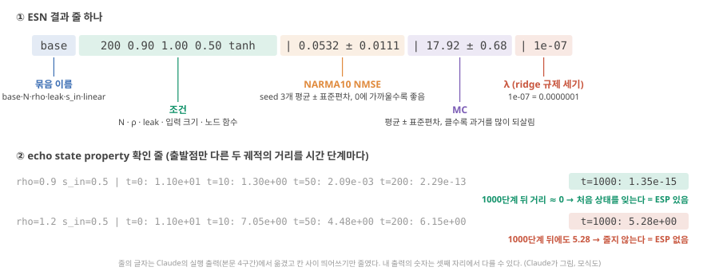
base 줄을 같은 다섯 칸으로 끊어 보세요. 아래 ②는 ESP 확인 줄에서 맨 끝 숫자(t=1000)만 보면 된다는 뜻입니다. e-15처럼 지수가 큰 음수면 0, e+00이면 그대로입니다. (Claude가 그림, 모식도)| 칸 | 값 | 뜻 |
|---|---|---|
| sweep | base | 어느 묶음의 실험인가(base, N, rho, leak, s_in, linear) |
| N rho leak s_in f | 200 0.90 1.00 0.50 tanh | 노드 수, spectral radius, leak, 입력 크기, 노드 함수 |
| NARMA10 NMSE | 0.0532 ± 0.0111 | 시험 구간 NMSE의 seed 3개 평균 ± 표준편차. 표준편차(값들이 평균에서 흩어진 정도, 분산의 제곱근, D11 기초)는 "reservoir 난수를 바꾸면 이만큼 흔들린다". 코드(np.std)는 seed 개수 3으로 나눈 값을 낸다. 이 교재의 기본인 표본 표준편차(\(n-1 = 2\)로 나눔)로 바꾸면 \(\sqrt{3/2} \approx 1.22\)배 커진다(0.0111 → 0.0136) |
| MC | 17.92 ± 0.68 | memory capacity(지연 1–200의 합)의 평균 ± 표준편차 |
| λ | 1e-07 | 첫 seed에서 검증으로 고른 ridge의 \(\lambda\). 1e-07은 \(1 \times 10^{-7}\) = 0.0000001 |
빠른 확인의 ± 0.0000. 1구간 단계 4의 --quick은 seed 하나로만 돌리므로 흩어짐을 잴 수 없어 ± 뒤가 모두 0.0000이고, base 줄의 NMSE도 seed 1 하나의 값 0.0680이라 세 seed 평균 0.0532와 다릅니다(그림 3의 0.068이 이 seed 1의 값). 둘 다 정상입니다.
여기까지: base 줄을 그림 6의 다섯 칸으로 끊고, 0.0532 ± 0.0111이 "seed 세 개의 시험 NMSE 평균과 흩어짐", 1e-07이 "검증으로 고른 λ = 10⁻⁷"임을 말할 수 있다. 다음: 기준선 줄, ESP 확인 줄, 그리고 기록 표에 옮기기.
기준선 줄. 예: quadratic_taps_20 features 231 | NARMA10 NMSE 0.0351 | MC - | λ 1e-09. 탭 20개와 그 곱, 특징 231개, NARMA10 NMSE 0.0351. 2차 기준선은 MC를 재지 않습니다(-).
ESP 확인 줄. 예: rho=1.2 s_in=0.5 | t=0: 1.10e+01 t=10: 7.05e+00 t=50: 4.48e+00 …. D9에서 그림으로 본 노드 200개 ESP 확인(D9 4구간: 노드 200개에서)의 숫자가 이 줄들입니다. 같은 reservoir(노드 200개, seed 1, leak 없음)를 두 벌 두고, 처음 상태만 각자 −1~1 난수로 다르게 한 뒤 같은 NARMA10 입력을 넣어, 두 상태 사이의 거리(칸별 차이를 제곱해 모두 더한 뒤 제곱근을 취한 숫자 하나)를 시간 단계 0, 10, 50, 200, 1000에서 잰 값입니다. 200칸이 처음에 제각각이라 t=0의 거리가 11.0으로 큽니다. 1.10e+01은 \(1.10 \times 10^{1}\) = 11.0, 2.29e-13은 \(2.29 \times 10^{-13}\)로 사실상 0입니다. 거리가 0으로 가면 ESP가 있고(D9), 줄지 않으면 없습니다. s_in=0.0 줄은 입력 없이 돌린 경우이고, rho=2.0 줄은 표에 없는 더 큰 ρ의 확인용입니다. 볼 것은 줄마다 맨 끝 t=1000의 값 하나입니다.
마지막 줄. 걸린 시간과 저장한 파일.
내 답의 실험 기록 표에 옮기기. 양식의 각 줄에 아래 출력 줄의 숫자를 적습니다. 반드시 내 출력의 숫자를 적고, Claude의 숫자를 옮겨 적지 않습니다.
| 양식의 줄 | 출력에서 찾을 줄 | 적을 것 |
|---|---|---|
| baseline: 입력 지연 탭 + 선형 회귀 | linear_taps_20(또는 10, 50) |
탭 수와 NARMA10 NMSE. 본 것 칸에 2차 기준선(quadratic_taps_20)도 함께 적으면 6구간 비교가 쉽다 |
| ESN 기본 | base |
N = 200, ρ = 0.9, leak = 1.0, NARMA10 NMSE |
| 노드 수 변화 | N 세 줄 |
N = 50 / 200 / 800 각각의 NMSE(와 MC) |
| spectral radius 변화 | rho 세 줄 + ESP 확인 줄 |
ρ = 0.3 / 0.9 / 1.2의 NMSE, ESP가 깨지는지 |
| leak rate 변화 | leak 세 줄 |
leak = 0.1 / 0.5 / 1.0의 NMSE와 MC |
| memory capacity | N 세 줄의 MC |
MC가 N(50, 200, 800)에 비해 얼마인지 → "MC가 노드 수에 묶이는가?" |
양식에 없는 s_in(입력 크기)과 linear(선형 노드) 결과도 5구간에서 중요하니, 표에 줄을 더해 적어 두기를 권합니다.
Claude의 전체 실행 출력 펼치기 (내 출력을 먼저 돌린 뒤 비교용)
NARMA10 data seed 7 (y range 0.000–0.778), T=4000, washout 100, train 2000, test 1900; reservoir seeds [1, 2, 3]
열의 뜻: N 노드 수, rho spectral radius, leak 새 값을 섞는 비율(1이면 leak 없음), s_in 입력 크기, f 노드 함수 | NARMA10 NMSE (seed 평균 ± 표준편차, 0에 가까울수록 좋음) | MC (클수록 과거 입력을 많이 기억) | λ (첫 seed에서 고른 ridge 규제 세기)
sweep N rho leak s_in f | NARMA10 NMSE | MC | λ
base 200 0.90 1.00 0.50 tanh | 0.0532 ± 0.0111 | 17.92 ± 0.68 | 1e-07
N 50 0.90 1.00 0.50 tanh | 0.2133 ± 0.0135 | 11.65 ± 0.89 | 1e-09
N 200 0.90 1.00 0.50 tanh | 0.0532 ± 0.0111 | 17.92 ± 0.68 | 1e-07
N 800 0.90 1.00 0.50 tanh | 0.0165 ± 0.0025 | 21.93 ± 0.32 | 1e-05
rho 200 0.30 1.00 0.50 tanh | 0.4276 ± 0.0344 | 8.78 ± 0.12 | 1e-09
rho 200 0.90 1.00 0.50 tanh | 0.0532 ± 0.0111 | 17.92 ± 0.68 | 1e-07
rho 200 1.20 1.00 0.50 tanh | 0.2604 ± 0.0539 | 18.91 ± 0.36 | 0.1
leak 200 0.90 0.10 0.50 tanh | 0.3288 ± 0.0004 | 6.16 ± 0.36 | 1e-05
leak 200 0.90 0.50 0.50 tanh | 0.1893 ± 0.0018 | 11.23 ± 0.15 | 1e-09
leak 200 0.90 1.00 0.50 tanh | 0.0532 ± 0.0111 | 17.92 ± 0.68 | 1e-07
s_in 200 0.90 1.00 0.10 tanh | 0.0319 ± 0.0041 | 29.32 ± 0.79 | 1e-09
s_in 200 0.90 1.00 0.50 tanh | 0.0532 ± 0.0111 | 17.92 ± 0.68 | 1e-07
s_in 200 0.90 1.00 2.00 tanh | 0.2320 ± 0.0134 | 8.24 ± 0.33 | 0.001
linear 200 0.90 1.00 0.50 linear | 0.1439 ± 0.0005 | 56.89 ± 3.67 | 0.001
linear 200 0.99 1.00 0.50 linear | 0.1458 ± 0.0004 | 75.00 ± 5.63 | 1e-05
baseline (reservoir 없음)
linear_taps_10 features 11 | NARMA10 NMSE 0.6516 | MC 9.08 | λ 0.1
linear_taps_20 features 21 | NARMA10 NMSE 0.1614 | MC 19.06 | λ 1e-09
linear_taps_50 features 51 | NARMA10 NMSE 0.1461 | MC 49.03 | λ 1e-09
quadratic_taps_10 features 66 | NARMA10 NMSE 0.6736 | MC - | λ 0.1
quadratic_taps_20 features 231 | NARMA10 NMSE 0.0351 | MC - | λ 1e-09
echo state property 확인: 초기 상태가 다른 두 궤적의 거리 |x_a − x_b| (N=200, seed 1)
rho=0.3 s_in=0.5 | t=0: 1.10e+01 t=10: 3.49e-05 t=50: 1.84e-16 t=200: 1.34e-16 t=1000: 1.39e-16
rho=0.3 s_in=0.0 | t=0: 1.10e+01 t=10: 3.76e-05 t=50: 1.33e-16 t=200: 1.30e-16 t=1000: 1.16e-16
rho=0.9 s_in=0.5 | t=0: 1.10e+01 t=10: 1.30e+00 t=50: 2.09e-03 t=200: 2.29e-13 t=1000: 1.35e-15
rho=0.9 s_in=0.0 | t=0: 1.10e+01 t=10: 1.45e+00 t=50: 4.04e-03 t=200: 6.45e-12 t=1000: 9.45e-16
rho=1.2 s_in=0.5 | t=0: 1.10e+01 t=10: 7.05e+00 t=50: 4.48e+00 t=200: 6.15e+00 t=1000: 5.28e+00
rho=1.2 s_in=0.0 | t=0: 1.10e+01 t=10: 7.85e+00 t=50: 8.04e+00 t=200: 8.53e+00 t=1000: 8.44e+00
rho=2.0 s_in=0.5 | t=0: 1.10e+01 t=10: 1.44e+01 t=50: 1.21e+01 t=200: 1.36e+01 t=1000: 1.38e+01
rho=2.0 s_in=0.0 | t=0: 1.10e+01 t=10: 1.51e+01 t=50: 1.39e+01 t=200: 1.45e+01 t=1000: 1.62e+01
runtime 56.6 s -> C:\Users\hyeon\OneDrive\Desktop\Neuromorphic ionotronics\study\tools\esn_results.jsonbase와 같은 조건(N 200, ρ 0.9, leak 1, 입력 0.5)이 N, rho, leak, s_in 묶음에도 한 줄씩 다시 나오는 것은 비교하기 쉽게 같은 결과를 반복해 보여 준 것입니다(다시 계산하지 않음).
숫자가 크게 다르다면. 기본 줄의 NMSE가 0.05 근처가 아니라 0.5 같은 값이면 명령을 다시 확인하세요(오타, 다른 폴더). numpy 버전이 다르면 셋째 자리 아래에서 다를 수 있지만 경향은 같아야 합니다. 해석
- ESN 줄 = 조건(N, ρ, leak, \(s_{in}\), f) | NARMA10 NMSE 평균 ± 표준편차 | MC 평균 ± 표준편차 | λ. 표준편차는 reservoir 난수에 따른 흔들림.
- ESP 줄: 거리가
e-13처럼 0으로 가면 ESP, 그대로면 없음. - 실험 기록 표에는 내 출력의 숫자만. 양식에 없는 \(s_{in}\)·선형 결과도 줄을 더해 적는다.
5. 조건을 바꿔 보기: 예측 → 실행 → 설명
이 구간을 읽고 나면 노드 수, spectral radius, leak, 입력 크기, 선형/비선형을 바꿀 때 NMSE와 MC가 어떻게 변할지 앞날의 개념으로 먼저 예측하고, 출력으로 확인한 뒤, 어긋난 예측의 이유를 적을 수 있다.
각 손잡이마다 먼저 예측을 적고(내 답의 "왜 그렇게 되는가" 칸 초안), 출력의 해당 줄을 보고, 그다음 '다음 단계'를 눌러 설명을 여세요. 설명은 Claude의 해석이며 정답이 아닙니다.
다섯 손잡이는 모두 1구간의 갱신식 한 줄 안에 있습니다(그림 7). 손잡이마다 먼저 바꾸는 것(식의 어디가 바뀌고, 그래서 reservoir 안에서 무엇이 달라지나)과 볼 곳(출력의 어느 줄, 어느 칸)을 적었습니다. 한 번에 한 손잡이만 바꾸고 나머지는 기본값(N 200, ρ 0.9, leak 1, 입력 0.5, tanh)으로 둡니다. 그래야 달라진 결과를 그 손잡이 탓으로 돌릴 수 있습니다.
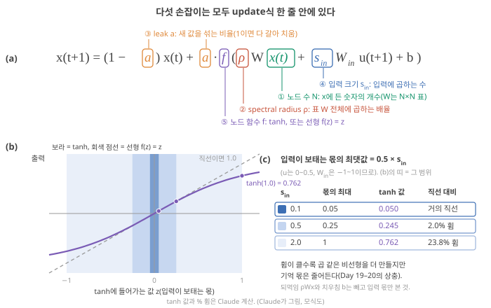
손잡이 1 — 노드 수 N (50 / 200 / 800).
바꾸는 것. 상태 \(x\)에 든 숫자의 개수입니다. 표 \(W\)가 \(N \times N\)으로 커지고(50개면 2,500칸, 800개면 640,000칸), readout이 받는 특징이 \(N + 2\)개(52, 202, 802)가 됩니다. 노드마다의 성질(ρ, leak, 입력 크기)은 그대로이고 "섞어 쓸 재료의 수"만 늘어납니다. 볼 곳. N 세 줄의 NMSE 칸과 MC 칸. MC를 그 줄의 N(50, 200, 800)과 나란히 놓아 보세요.
먼저 예상해 보세요. N을 4배씩 늘리면 NMSE는? MC는 N에 비례해 50, 200, 800 근처가 될까요? (D8 6구간: 고정된 난수 특징, D11 3구간: 총량 ≤ N) 내 답의 "왜 그렇게 되는가" 칸에 한 줄 적은 뒤 다음 단계로 넘어가세요.
확인 — Claude의 출력과 해석. Claude의 출력: NMSE 0.213 → 0.053 → 0.0165, MC 11.7 → 17.9 → 21.9. NMSE는 꾸준히 줄었습니다. 고정된 특징이 많을수록 readout이 섞어 쓸 재료가 많기 때문입니다(D8 그림 12). 그런데 MC는 N에 한참 못 미치고, N이 16배가 되는 동안 2배도 안 늘었습니다. MC ≤ N은 상한일 뿐이고(D11), tanh reservoir는 총량의 상당 부분을 비선형(차수 2 이상)에 쓰며, ρ = 0.9의 흐려짐 속도가 기억이 닿는 길이를 정하기 때문입니다(D9). "MC가 노드 수에 묶이는가?"에 대한 답은 "위로는 묶이지만(≤ N), 그 상한까지 차지는 않는다"입니다. 해석
손잡이 2 — spectral radius ρ (0.3 / 0.9 / 1.2).
바꾸는 것. 표 \(W\) 전체에 곱하는 배율입니다. 입력을 끊으면 상태에 남은 흔적이 한 단계마다 대략 ρ배가 됩니다(tanh의 직선 구간에서, D9 기초: spectral radius). 3단계 뒤면 ρ = 0.3은 \(0.3^3 \approx 0.027\), ρ = 0.9는 \(0.9^3 \approx 0.73\)이 남고, ρ = 1.2는 줄지 않고 커지려다 tanh에 눌립니다. 볼 곳. rho 세 줄의 NMSE·MC·λ 칸, 그리고 ESP 확인 줄 rho=0.3, rho=0.9, rho=1.2의 맨 끝(t=1000) 값.
먼저 예상해 보세요. ρ = 0.3이면 기억이 몇 단계쯤일까요(\(0.3^k\))? ρ = 1.2이면 MC는 커질까요? NMSE는? ESP 확인 줄의 ρ = 1.2를 먼저 보세요. 내 답의 "왜 그렇게 되는가" 칸에 한 줄 적은 뒤 다음 단계로 넘어가세요.
확인 — Claude의 출력과 해석. Claude의 출력: NMSE 0.428 / 0.053 / 0.260, MC 8.8 / 17.9 / 18.9. ρ = 0.3은 흔적이 매 단계 크게 줄어, \(MC_k\)가 10단계 근처에서 0.5 아래로 떨어집니다(그림 4 빨강). \(0.3^k\)만 보면 3단계에 거의 사라질 것 같은데 10단계 가까이 버티는 것은, 잡음이 없는 시뮬레이션이라 readout이 노드 200개에 남은 아주 작은 흔적까지 큰 가중치로 키워 읽을 수 있기 때문으로 보입니다. 측정 잡음이 있는 소자라면 흔적이 잡음보다 작아지는 곳에서 더 일찍 끊깁니다. 해석 그래도 기본(19단계)의 절반이라, NARMA10이 요구하는 10단계를 넉넉히 채우지 못합니다(D9 2구간). ρ = 1.2는 MC가 기본과 비슷한데도 NMSE가 5배 나쁩니다. ESP 확인 줄에서 ρ = 1.2의 거리는 1,000단계 뒤에도 5.28로, 처음(11.0)의 절반쯤에 머물 뿐 0으로 가지 않습니다(D9에서 본 노드 200개의 ESP 확인과 같은 숫자). 상태가 입력만이 아니라 처음 상태와 reservoir 자체의 들뜬 움직임에도 좌우되어, readout이 학습한 관계가 시험 구간에서 덜 맞는 것으로 해석할 수 있습니다(D9 3구간). 같은 줄의 λ가 0.1로 크게 골라진 것도 readout이 불안정한 상태에 큰 가중치를 주지 않도록 강하게 규제해야 했다는 신호입니다. 해석
손잡이 3 — leak (0.1 / 0.5 / 1.0).
바꾸는 것. 매 단계 새 값을 섞는 비율 \(a\)입니다. D9에서 계산한 대로, 노드 하나가 지금 0.8이고 이번 단계의 새 값이 0.2라면 \(a\) = 1은 0.2로 다 갈아 치우고, \(a\) = 0.1은 \(0.9 \times 0.8 + 0.1 \times 0.2 = 0.74\)로 조금만 움직입니다(D9 기초: leak). 그래서 \(a\)가 작으면 상태가 천천히 움직이고, 새 입력은 \(a\)배로만 들어갑니다. 흔적이 한 단계에 남는 배율은 대략 \((1-a) + a\rho\)로, leak 0.1 / 0.5 / 1.0에서 0.99 / 0.95 / 0.9입니다. 볼 곳. leak 세 줄의 NMSE와 MC, 그리고 NMSE의 ± 뒤 표준편차.
먼저 예상해 보세요. leak을 줄이면 배율이 1에 가까워져 오래 기억할 텐데, MC와 NMSE는 좋아질까요? 내 답의 "왜 그렇게 되는가" 칸에 한 줄 적은 뒤 다음 단계로 넘어가세요.
확인 — Claude의 출력과 해석. Claude의 출력: NMSE 0.329 / 0.189 / 0.053, MC 6.2 / 11.2 / 17.9. leak을 줄일수록 둘 다 나빠졌습니다. 새 입력이 상태에 \(a\)배로만 들어가 상태가 지난 입력들의 평균처럼 뭉개지고, NARMA10이 요구하는 "9단계 전 입력과 지금 입력의 곱"처럼 하나하나의 값을 구별해야 하는 정보가 흐려집니다(D9에서 작은 표로 따라간 느리게 잊는 것 ≠ 많이 기억하는 것). 표준편차가 작은(±0.0004) 것은 이 경우 reservoir 난수보다 leak의 평균화 효과가 결과를 지배한다는 뜻으로 읽을 수 있습니다. 해석 이온 소자로 옮기면, 소자를 1차 이완으로 근사할 때 \(a \approx \Delta t/\tau\)이므로(D9 기초: leak) 시간상수 τ를 입력 간격 Δt보다 훨씬 길게 만드는 것이 이 경우에 해당합니다(D13).
여기까지: 손잡이 1–3(N, ρ, leak)에서 식의 어디가 바뀌는지 말하고, "N ↑이면 좋아지지만 MC는 N에 한참 못 미침", "ρ 1.2는 ESP가 깨져 나쁨", "leak ↓는 평균처럼 뭉개져 나쁨"을 출력 줄로 확인할 수 있다. 다음: 입력 크기와 선형 노드, 그리고 내 조건 돌려 보기.
손잡이 4 — 입력 크기 s_in (0.1 / 0.5 / 2.0).
바꾸는 것. tanh에 들어가기 전에 입력에 곱하는 숫자입니다. 입력 \(u\)(0~0.5)에 \(W_{in}\)(−1~1)과 \(s_{in}\)을 곱하므로, 입력이 보태는 몫은 많아야 \(0.5 \times s_{in}\) = 0.05 / 0.25 / 1.0입니다. tanh에 넣으면 tanh(0.05) = 0.050(직선과 거의 같음), tanh(0.25) = 0.245(직선보다 2% 낮음), tanh(1.0) = 0.762(직선이면 1.0, 24% 낮음)입니다(그림 7 아래). 많이 휠수록 노드가 곱 같은 비선형을 더 만들지만, D11의 상충대로 기억에 쓸 몫이 줄어듭니다(D11 4구간: 노드 200개에서도). (되먹임 \(\rho W x\)와 치우침 \(b\)도 같은 tanh 안에 더해지므로 실제 운전 범위는 이보다 조금 넓습니다.) 볼 곳. s_in 세 줄의 NMSE와 MC가 같은 방향으로 움직이는지.
먼저 예상해 보세요. D11의 상충으로 예측하세요. 입력을 줄이면 MC는? NARMA10은 2차 비선형만 요구하는데, NMSE는 좋아질까요 나빠질까요? 내 답의 "왜 그렇게 되는가" 칸에 한 줄 적은 뒤 다음 단계로 넘어가세요.
확인 — Claude의 출력과 해석. Claude의 출력: NMSE 0.032 / 0.053 / 0.232, MC 29.3 / 17.9 / 8.2. 입력을 0.1로 줄이자 기억(MC)이 늘고 NMSE도 좋아졌습니다. 노드가 덜 휘는 구간에서 움직여 용량이 기억 쪽으로 옮겨 갔고, NARMA10의 2차 비선형은 약한 휨으로도 충분했다고 해석할 수 있습니다(D11 6구간). 입력 2.0은 노드가 포화 쪽으로 밀려 기억이 8단계 남짓으로 줄어 10단계 기억을 채우지 못했습니다. 기본값 0.5가 이 과제의 최선이 아니었다는 것, 즉 "기본 설정"도 과제에 맞춰 골라야 한다는 것이 이 줄의 교훈입니다. 측정 잡음이 있는 물리 소자라면 입력을 너무 줄이면 반대로 잡음에 묻힙니다(D11 그림 5의 입력 0.01). 해석
손잡이 5 — 선형 노드 (ρ 0.9 / 0.99).
바꾸는 것. 노드 함수를 tanh에서 \(f(z) = z\)(전혀 휘지 않음)로 바꿉니다. 그러면 겹침 원리가 성립해, 상태는 지난 입력들의 가중합일 뿐입니다(D10 기초). ρ = 0.99 줄은 흔적이 더 오래 남게 한 판입니다. 볼 곳. linear 두 줄의 MC(tanh 기본 줄의 MC와 비교)와 NMSE(기준선 줄 linear_taps_50과 비교).
먼저 예상해 보세요. 선형 reservoir는 MC가 클까요 작을까요? NARMA10 NMSE는 지연 탭 몇 개짜리 기준선과 비슷할까요? (D10 1구간) 내 답의 "왜 그렇게 되는가" 칸에 한 줄 적은 뒤 다음 단계로 넘어가세요.
확인 — Claude의 출력과 해석. Claude의 출력: NMSE 0.144 / 0.146, MC 56.9 / 75.0. 기억은 tanh보다 3–4배 크지만 NARMA10은 지연 탭 50개 + 선형(0.146)과 같은 수준입니다. 선형 reservoir + 선형 readout은 지난 입력의 가중합만 만들 수 있어 2차 곱을 못 만들기 때문입니다(D10에서 같은 결과를 표로 본 곳: D10 1구간). 기억(MC)은 그림 4의 회색 곡선처럼 50단계 가까이 갑니다. 기억을 아무리 늘려도 비선형 없이 넘을 수 없는 벽이 0.14 근처에 있는 셈입니다. 해석
내 조건 하나 돌려 보기. 위 결과를 보고 "더 나은 조건"을 하나 예측해 직접 돌려 보세요. 옵션 --one 뒤에 바꿀 값만 이름=값 꼴의 인수로 적으면 나머지는 기본값을 씁니다(N=200, rho=0.9, leak=1, s_in=0.5). 이름은 N, rho, leak, s_in, linear(1이면 선형 노드) 다섯 가지이고, 대소문자까지 그대로, = 양쪽에는 빈칸 없이, 여러 개는 빈칸으로 띄어 적습니다. 잘못 쓴 이름은 오류 없이 무시되므로(코드의 parse_one), 결과 줄의 조건 칸에 내가 바꾼 값이 찍혔는지 확인하세요. 저장하지 않으므로 몇 번이든 돌려도 됩니다. N이 클수록 오래 걸립니다.
python tools/esn.py --one N=400 s_in=0.1출력은 머리 줄과 one 줄 하나입니다. 예를 들어 Claude가 돌린 위 명령의 결과는 one 400 0.90 1.00 0.10 tanh | 0.0153 ± 0.0024 | 33.49 ± 0.98 | 1e-09(Claude의 컴퓨터에서 16초)로, 노드 800개 기본 조건(0.0165)보다 나았습니다. 노드를 두 배 늘리는 것과 입력 크기를 과제에 맞추는 것이 비슷한 효과를 낸 예입니다. 해석 다른 조합(예: rho=0.95 s_in=0.2, leak=0.7)도 예측 → 실행 → 설명으로 기록해 보세요.
기준선의 탭 수 바꿔 보기. 2구간의 예측 문제(탭 10개가 \(u(t-10)\)을 갖지 못한다)를 확인합니다.
python tools/esn.py --taps 11Claude의 출력: linear_taps_11 features 12 | NARMA10 NMSE 0.3513 | MC 10.08, quadratic_taps_11 features 78 | NARMA10 NMSE 0.2796(1초 미만). 비교할 탭 10개의 값은 전체 실행 출력의 linear_taps_10(0.6516)과 quadratic_taps_10(0.6736) 줄에 있습니다. 탭을 10개에서 11개로 하나만 늘려 \(u(t-10)\)이 들어오자 선형 기준선은 0.652 → 0.351, 2차 기준선은 0.674 → 0.280으로 좋아졌습니다. 기준선도 과제가 요구하는 기억 길이를 덮어야 공정한 비교가 된다는 뜻입니다. 해석
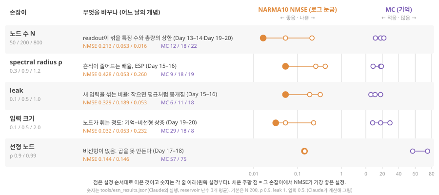
- N ↑: NMSE 0.213 → 0.053 → 0.0165, MC 11.7 → 21.9로 N에 한참 못 미침(≤ N이지만 차지 않음).
- 다섯 손잡이는 갱신식 안의 자리가 다르다: N = 상태 숫자 개수, ρ = \(W\)의 배율, leak = 섞는 비율, \(s_{in}\) = tanh 앞 입력 배율(몫 최대 \(0.5 \times s_{in}\)), 선형 = 휘지 않는 \(f\). 한 번에 하나만 바꾼다.
- ρ: 0.3은 기억 부족(0.428), 1.2는 MC가 비슷해도 ESP가 깨져 0.260. leak ↓: MC와 NMSE 모두 나빠짐(평균화).
- \(s_{in}\) ↓: MC 29.3, NMSE 0.032로 기본보다 좋음. 선형 노드: MC 56.9인데 NMSE 0.144(지연 탭 50개와 같음).
--one으로 내 조건,--taps로 기준선 탭 수를 바꿔 본다. 탭 10 → 11에서 기준선이 크게 좋아진다(u(t−10)). 모두 Claude의 시뮬레이션.
6. 기준선과 비교: ESN은 언제 나은가
이 구간을 읽고 나면 결과 한 장(그림 9)에서 ESN이 선형 지연 탭 기준선보다는 낫지만 같은 특징 수의 2차 기준선보다는 나을 게 없는 조건을 짚고, 그것이 소프트웨어 RC와 물리 RC에 각각 무엇을 뜻하는지 말할 수 있다.
무엇을 볼지. 그림 9는 오늘 돌린 모든 조건의 NARMA10 시험 NMSE를 한 줄씩 늘어놓은 것입니다. 막대가 짧을수록(왼쪽) 좋습니다. 먼저 맨 위 파랑(기본 ESN, 0.0532)과 맨 아래 검정(탭 20 + 곱, 0.0351)을 비교하세요.
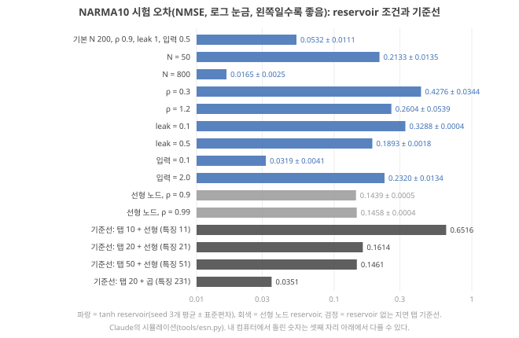
비교 하나 — 선형 지연 탭. ESN 기본(특징 202개)은 0.053, 지연 탭 50개 + 선형(특징 51개)은 0.146. ESN이 3배 가까이 낫습니다. 기억을 저장해 넣기만 해서는 2차 곱을 못 만들기 때문입니다(D10 1구간).
비교 둘 — 2차 지연 탭. 그런데 탭 20개와 그 곱(특징 231개)은 0.035로, 특징 수가 비슷한 ESN 기본(202개, 0.053)보다 낫습니다. (이 차이를 얼마나 믿을 수 있나: ESN 0.053은 reservoir 난수 3개의 평균이고 흔들림이 ±0.011이라, 0.035와의 차이는 그 흔들림의 약 1.6배입니다(\(n-1\)로 나눈 표본 표준편차 0.0136으로 재면 약 1.3배). 데이터 난수도 하나(seed 7)뿐이라 '확실히 낫다'보다 '이 설정에서는 나을 게 없다'로 읽는 것이 정직합니다. 셋째 자리 숫자는 numpy 버전에 따라 조금 달라질 수 있습니다.) NARMA10의 비선형이 정확히 2차이므로, 2차 곱을 빠짐없이 주는 기준선이 유리한 과제입니다. ESN이 이 기준선을 이긴 것은 노드 800개(특징 802개, 0.0165)와 입력을 0.1로 맞춘 조건(특징 202개, 0.032)이었습니다. Singh 2026이 말한 "가능하면 같은 특징 수"로 비교하면 Singh 2026, p.8, 기본 설정의 ESN은 이 과제에서 2차 기준선보다 나을 게 없습니다. 해석
그래서 ESN은 언제 낫나. 해석 이 실습만으로 말할 수 있는 범위는 좁습니다.
- 과제의 비선형 차수와 기억 길이를 모를 때: 2차 기준선은 "2차, 20단계"를 미리 정해 넣은 것이고, 3차가 필요하면 특징 수가 세제곱으로 늘어납니다(탭 20개의 3차까지면 1,771개). reservoir는 차수를 미리 정하지 않고 여러 차수를 섞어 줍니다(D11 기초: 기저 함수와 차수).
- 기억을 저장하는 비용이 클 때: 기준선은 지난 입력 20개를 메모리에 들고 곱 210개를 매 단계 계산해야 합니다. reservoir의 약속은 그 일을 동역학이 대신한다는 것입니다(D9 1구간: 기억을 얻는 두 방법).
- 반대로 과제의 구조(2차, 10단계)를 알고 디지털 계산이 싸다면, 2차 기준선이 더 정확하고 단순할 수 있습니다.
물리 RC에 대해 이 실습이 말하는 것. 오늘 숫자는 모두 잡음 없는 소프트웨어 ESN입니다. Liang은 하드웨어 잡음 때문에 비슷한 구성이면 소프트웨어 RC가 대개 물리 RC보다 낫다고 씁니다. Liang 2024, p.201 그러니 노드 200개 소프트웨어 ESN이 2차 기준선을 못 이긴 과제에서, 잡음 있는 소자 200개가 정확도로 이길 가능성은 더 낮다고 보는 것이 출발점입니다. 해석 물리 RC의 근거가 남는 곳은 정확도가 아니라 Liang이 말한 시스템 복잡도·전력이고, Liang은 디지털 RC보다 자원을 더 쓰는 물리 RC는 의미가 없다는 조건을 제시합니다. Liang 2024, p.202 이 조건이 오늘 비교를 소자 판단으로 옮기는 기준입니다. 해석 Phase 3(D13–D18)이 그 판정을 위한 도구입니다.
내 소자로 NARMA10을 한다고 상상해 봅시다. 소자 몇 개(또는 가상 노드 몇 개)로, 입력 한 단계에 몇 ms가 걸리고, 시험 데이터 1,900단계를 재는 데 실제로 몇 분이 걸릴까요? 같은 일을 하는 2차 기준선(지난 입력 20개 저장 + 곱 210개)은 마이크로컨트롤러에서 얼마나 걸릴지 어림해 보세요(D5의 MCU, 즉 센서 옆에서 쓰는 작은 저전력 컴퓨터 D5 기초). 두 숫자를 나란히 적는 것이 D17의 출발점입니다.
- ESN 기본(202개) 0.053 vs 선형 탭 50(51개) 0.146: ESN이 낫다(2차 곱).
- vs 2차 탭 20(231개) 0.035: 같은 특징 수에서는 기본 ESN이 나을 게 없다. N 800(0.0165), 입력 0.1(0.032)은 이긴다. 같은 특징 수로 비교한다 Singh 2026, p.8. 숫자는 모두 Claude의 실행 결과이고, 내 실행과 셋째 자리는 다를 수 있다.
- 소프트웨어가 대개 물리보다 정확하고 Liang 2024, p.201, 디지털보다 비싸면 무의미 Liang 2024, p.202 → 물리 RC의 판정은 시스템 비용으로(Phase 3).
7. Phase 2 종합
D7–D12의 주장을 한 사슬로 잇고, 근거가 가장 약한 고리를 지목하며, Phase 2를 읽기 전에 세운 가정 중 바뀐 것을 표로 적을 준비를 마친다.
Phase 2의 질문. "RC는 왜, 어떻게 작동하는가?" 엿새의 답을 한 줄씩 이으면 아래 표입니다. 새 내용은 없고, 각 날에서 한 줄씩 다시 꺼낸 것입니다(날 이름을 누르면 그 구간으로 갑니다). 오른쪽 열은 그 고리의 근거 상태입니다.
| 날 | 한 줄 주장 | 근거 상태 |
|---|---|---|
| D7 | RNN은 내부 학습이 어렵고(BPTT, 소실·폭주, 물리 소자는 내부 접근·미분 불가), RC는 내부를 고정하고 readout만 학습해 이를 피했다. 물리 RC의 약속은 정확도가 아니라 시스템 비용이다 | 폴더 원문(Liang, Stepney) 확인; 소실·폭주 원 출처 미확인 |
| D8 | 상태는 입력 이력의 고정된 비선형 함수이고, readout은 ridge 한 번으로 풀린다. 기억·비선형 섞임·다양함·읽을 수 있음이 있을 때만 고정해도 된다 | 손 계산 + Stepney·Liang 확인; 조건 정리는 해석 |
| D9 | 과거가 필요한 과제에는 기억이 필요하고, fading memory·ESP가 그 조건이다. 느린 감쇠는 다섯 고리 중 하나이며 노드 하나의 기억은 합 1인 예산이다 | 손 계산·시뮬레이션 해석; Singh·Stepney 확인 |
| D10 | 선형 reservoir는 지연 탭과 같은 일만 한다. 비선형이 필요하고, 선형으로 늘린 차원은 여전히 선형이다. 고정 읽기 전압의 I–V 휨은 쓸모 있는 비선형의 증거가 아니다 | 증명·시뮬레이션 해석; Singh p.13 확인; 이온 소자에서의 겹침 검사 가설 |
| D11 | 기억과 비선형은 선형 독립인 상태 변수 수로 묶인 총량을 나눠 쓴다(소자 개수가 아님). 같은 소자를 늘려도 용량이 늘지 않고, 서로 다른 소자가 필요하다 | 상한과 그 조건은 Dambre 2012 공개 본문(Theorem 4·7) 확인, Stepney·Liang 요약 확인; 소자 배열 시뮬레이션은 가상 모형 해석 |
| D12 | 노드 200개 ESN은 선형 기준선보다 낫지만 같은 특징 수의 2차 기준선보다는 나을 게 없었다. 설정(N, ρ, leak, 입력 크기)이 결과를 몇 배씩 바꾼다 | Claude의 시뮬레이션(내가 재현할 것); 물리 RC로의 일반화 가설 |
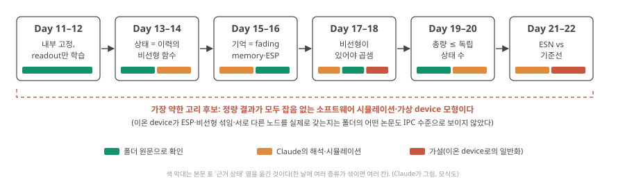
가장 약한 고리. 표의 오른쪽 열을 보고 고릅니다. Claude의 판단으로는 두 후보가 있습니다. 해석 (1) Phase 2의 모든 정량 결과가 잡음 없는 소프트웨어 시뮬레이션과 가상 소자 모형이라는 점. 이온 소자의 실제 상태가 D8–D11의 조건(ESP, 비선형 섞임, 서로 다른 노드)을 만족하는지는 폴더의 어떤 논문도 IPC 수준으로 보이지 않았습니다. (2) "총 IPC ≤ 독립 상태 수"의 원 증명은 D11에서 공개 본문으로 조건을 확인했지만, 그 조건(아주 긴 데이터, 서로 독립인 입력, 잡음 없음)이 실제 소자 측정과 다르다는 점. 내 답에서 다른 고리를 골라도 됩니다. 고른 고리에 대해 "무엇을 확인하면 이 고리가 확인으로 바뀌는가"를 한 줄 적는 것이 Phase 3의 숙제가 됩니다.
이 Phase에서 바뀌었을 가정 — 회고 안내
D12 양식의 "Phase 2 종합"에 있는 "앞서 세운 가정 중 바뀐 것" 표(바뀌기 전 가정 | 바뀐 뒤 | 바꾼 근거)를 채우는 방법입니다.
- D7–D11의 사전 테스트·먼저 만들어 보기와 Phase 1 종합(D6)을 다시 엽니다. 거기 적힌 문장 중 지금 보면 고치고 싶은 것을 고릅니다. 흔한 후보(모범 답이 아니라 찾는 방향의 예입니다):
- "reservoir 상태는 입력의 과거를 기록한다" → 무엇을, 얼마나, 어떤 조건에서(D8–D9)?
- "소자가 비선형이고 서서히 잊으면 reservoir로 쓸 수 있다" → 무엇을 더 보여야 하나(D9 인과 사슬, D10 겹침 검사, D12 기준선)?
- "retention(유지 시간)이 길수록 좋다", "정류비·히스테리시스가 클수록 좋다" → 과제에 맞춘 배분(D9, D11)?
- "소자를 많이 만들면 고차원 reservoir가 된다" → 서로 다른 정도(D10–D11)?
- "ESN은 단순한 방법보다 낫다" → 어떤 기준선, 어떤 특징 수와 비교했나(D12)?
- 각 가정이 어느 날, 어느 글에서 바뀌었는지와 바꾼 근거(쪽수 또는 "Claude의 시뮬레이션, 내가 재현함")를 적습니다. 근거가 해석이면 그렇게 적습니다. 바뀌지 않은 가정도 적어도 됩니다.
- 바뀐 가정 중 하나는 반드시 내 소재·소자에 관한 것이어야 합니다. 예: "내 소자의 느린 이완은 계산 자원이다"가 D9의 다섯 고리를 지나며 어떤 조건이 붙었는지.
모의 디펜스. 내 답(실험 기록 + Phase 2 종합)을 저장한 뒤 Claude에게 "D12 모의 디펜스"라고 말하면 Phase 2 전체에서 섞어서 묻습니다. 답하지 못한 것을 양식의 마지막 칸에 적습니다.
오늘의 반론
가장 강한 반론: "NARMA10은 인위적인 벤치마크다. 2차 기준선이 이긴 것은 과제가 정확히 2차라서이고, 실제 센서 신호(심전도, 촉각)에서는 결과가 다를 것이다. 그러니 오늘 실습으로는 아무 결론도 낼 수 없다." 이 반론은 상당 부분 옳습니다. Stepney도 NARMA를 조심해서 쓰라고 하고 Stepney 2024, p.677, 한 과제의 결과를 다른 과제로 옮기기 어렵다고 씁니다. 그러나 오늘 실습이 보여 준 것은 "ESN이 좋다/나쁘다"가 아니라 판정하는 방법입니다. 시험 데이터, 같은 특징 수의 기준선, 설정에 따른 흔들림(표준편차), 지연별 기억. 실제 센서 과제(D15)에서도 이 방법은 그대로 쓰입니다. 내 답에서 이 반론에 어떻게 설지 적으세요.
Phase 2를 마치며, 내 소재(고분자 전해질, 이온 다이오드, 계면 이온 축적 등)에 대해 지금 적을 수 있는 가장 정직한 문장은 무엇인가요? "내 소자는 ____(D9의 고리 몇 번)까지 보였고, ____(겹침 검사·MC·기준선 비교)는 아직 없다. 그것을 하려면 ____가 필요하다." 빈칸을 채우고, 채우지 못한 빈칸을 '아직 모르는 것'에 옮기세요.
- Phase 2 사슬: 학습의 어려움(D7) → 고정 + readout(D8) → 기억(D9) → 비선형(D10) → 노드 수로 묶인 배분(D11) → 실습과 기준선(D12).
- 가장 약한 고리 후보: 모든 정량이 소프트웨어 시뮬레이션·가상 모형이라는 점, IPC 상한의 조건(아주 긴 데이터·독립 입력·잡음 없음)이 실제 측정과 다르다는 점 해석.
- 바뀐 가정 표에는 날·글·근거를 적고, 하나는 내 소재에 관한 것으로.
오늘의 총정리
자료를 덮고 아래 표를 먼저 머릿속으로 채운 뒤 펼쳐 보세요. 그다음 종합 퀴즈를 풉니다.
한 장 요약 펼치기
| 질문 | 한 줄 답 | 근거·조건 |
|---|---|---|
| 어떻게 돌리나 | study 폴더 터미널에서 python tools/esn.py --quick → python tools/esn.py |
Claude의 컴퓨터에서 16–45초 / 1–2분 남짓(컴퓨터에 따라 다름). 내 숫자만 기록 |
| NARMA10 | 2차 곱 + 10단계 기억을 요구하는 흉내 과제. 설정마다 다른 신호 | Stepney 2024, p.676–677 Liang 2024, p.200 |
| NMSE / MC | 오차 ÷ 정답 분산(평균만 말하면 1) / \(k\)단계 전 입력 되살리기 corr²의 합(≤ N) | Stepney 2024, p.676, 679 |
| 지연 탭 기준선 | 지난 입력을 저장해 넣는 reservoir 없는 비교 대상. 같은 특징 수로 비교 | 탭 20의 MC ≈ 19(확인용); Singh 2026, p.8 |
| 전처리 | 정규화·입력 크기·washout 100·학습/검증/시험 1,500/500/1,900(λ를 고른 뒤 2,000단계로 다시 학습) | Stepney 2024, p.668 Zhong 2022, p.675 |
| 조건을 바꾸면 | N ↑ 좋아짐, ρ 0.3 기억 부족, ρ 1.2 ESP 깨짐, leak ↓ 나빠짐, 입력 ↓ 이 과제에선 좋아짐, 선형 노드는 0.14 벽 | Claude의 시뮬레이션 |
| 기준선과 비교 | 선형 탭보다 낫고(0.053 vs 0.146), 같은 특징 수의 2차 탭보다는 나을 게 없다(0.053 vs 0.035, Claude 실행 결과) | 물리 RC는 대개 더 부정확 Liang 2024, p.201, 비싸면 무의미 Liang 2024, p.202 |
| 사전 테스트·먼저 만들어 보기와 달라질 점 | "ESN이면 단순한 방법보다 낫다" → 어떤 기준선·어떤 특징 수와 비교했는지에 달렸다 | 6구간 |
| 오늘의 숫자 | 탭 10 → 11에서 기준선 0.652 → 0.351 | Claude의 시뮬레이션 |
| 오늘의 반론 | NARMA10은 인위적 → 결론이 아니라 판정 방법을 배운 것 | Stepney 2024, p.677 |
| 모르는 것 하나 | 내 소자 배열로 같은 실험을 하면 시험 1,900단계를 재는 데 얼마나 걸리나 | D13, D17 |
내 답에 꼭 들어가야 할 것
모범 문장은 주지 않습니다. 내 답이 아래 질문에 답했는지 확인하세요.
- 실험 기록 표의 숫자가 내가 직접 돌린 출력에서 왔나? 돌린 명령과 날짜, numpy 버전을 한 줄 적었나?
- 결과 하나하나에 "왜 그렇게 되나"를 D8–D11의 개념(기억 예산, ESP, 상충, 겹침)으로 붙였나? 숫자만 있고 인과가 없는 줄은 없나?
- baseline과의 비교에서 특징 수를 함께 적었나? ESN이 나은 조건과 나을 게 없는 조건을 둘 다 적었나?
- 이 결과가 소프트웨어 시뮬레이션이라는 것과, 물리 소자로 옮길 때 달라질 것(잡음, 속도, 비용)을 한 줄 적었나?
- Phase 2 종합에 "바뀐 가정"을 날·글·근거와 함께 적었고, 그중 하나가 내 소재에 관한 것인가?
장부에 옮길 후보
- 병목 장부: (응용이 요구하는 것) 과제의 비선형 차수와 기억 길이, 그리고 같은 정확도를 내는 디지털 기준선(2차 지연 탭)의 비용 vs (메커니즘이 허용하는 것) 소자 배열이 잡음 속에서 낼 수 있는 독립 상태 수와 그 배분. 소프트웨어 ESN 200노드도 2차 기준선(231개)을 못 이긴 과제가 있다.
- 병목 장부: 시험 1,900단계 × 입력 간격 = 측정 시간. 이온 소자의 ms–s 시간척도에서 이 실습을 실물로 하면 측정 시간과 그동안의 드리프트가 병목이 될 수 있다(D13, D18).
- 아직 모르는 것: 내 소자로 MC를 재면 몇이 나올까? / 실제 센서 과제에서도 2차 기준선이 이렇게 강할까(D15–D16)?
- 용어집: 터미널, 프롬프트, 패키지(numpy), seed, NARMA10, NMSE, NRMSE, memory capacity, \(MC_k\), 지연 탭, 2차 기준선, 특징 수, 정규화, 입력 스케일링, washout, 학습/검증/시험, 표준편차,
1e-07표기. - 접는 기준 후보: "내 소자 배열(가상 노드 포함)로 학습한 선형 readout이, 같은 특징 수의 2차 지연 탭 기준선보다 시험 데이터에서 낫지 않고 시스템 비용도 싸지 않다."
더 읽을거리
서지와 읽음·대조 상태는 참고문헌 페이지에 있습니다. 쪽수는 인쇄 쪽수입니다. 아래는 모두 보충이며, 오늘 본문은 이것 없이 읽히도록 썼습니다.
내가 읽은 논문 (다시 볼 곳)
- Liang 2024, Nat. Electron. 7, 193–206. p.200 "Performance benchmark"(MC의 측정법, NARMA가 기억과 비선형을 함께 시험한다는 문장), p.201(소프트웨어 RC가 대개 낫다), p.202(자원 조건).
폴더에 있지만 아직 읽지 않은 논문 (Claude가 일부 대조함)
- Stepney 2024, Natural Computing 23, 665–685. 7.1절(p.675–676: MSE, NMSE, NRMSE의 정의), 7.2.2절(p.676–677: NARMA의 식, 매개변수, 발산, 주의), 7.3.2절(p.679: MC). 오늘 실습 코드의 설계 근거입니다.
- Singh 2026, Adv. Mater. e74897. p.8(같은 부호화·나누기·정규화·특징 수의 기준 비교), p.13(지연별 기억 분포).
- Zhong 2022, Nat. Electron. 5, 672–681. p.675(심전도 정규화와 1,000/9,000 나누기), p.677(손동작 600/300).
폴더 밖 (서지는 확인, 내용은 미확인)
- Atiya & Parlos 2000, IEEE Trans. Neural Netw. 11(3), 697–709. "New results on recurrent network training: unifying the algorithms and accelerating convergence". NARMA10 식의 출처(Stepney·Liang이 인용).
- Jaeger 2002, GMD Report 152. MC의 원 정의.
- Lukoševičius 2012, LNCS 7700, 659–686. ESN 실무 지침(입력 크기·spectral radius·leak·ridge를 고르는 요령). 오늘 5구간의 손잡이를 더 체계적으로 고르고 싶을 때.
④ 가르치듯 내 답
후배에게 설명한다고 생각하고 오늘 질문에 답합니다. 기본은 짧은 답입니다: 3–5문장, 또는 작은 도식 하나와 한 줄 설명, 그리고 설명하다 막힌 곳 한 줄. 이것만으로 정상적인 학습입니다. 왜·어떻게, 근거와 반론까지 쓰는 긴 종합 답안은 선택입니다. 주장에 확인 해석 가설 태그를 붙이면 좋고, 확인은 원문에서 직접 본 것에만 씁니다. 몇 번이고 고쳐도 됩니다. 막히는 곳은 따로 적어 두세요.
오늘은 실습일이자 Phase 2를 마무리하는 날입니다.
- 실습 코드와 재현 방법은 학습자료 안에 들어갑니다(D12 자료를 만들 때 함께 제공). 코드는 이 폴더의
tools/esn.py로 저장되며,python tools/esn.py로 실행해 같은 숫자가 나오는지 확인할 수 있게 만듭니다. - 내 답의 '실험 기록' 표에는 내가 직접 돌린 숫자만 적습니다. 자료의 숫자를 옮겨 적지 않습니다.
- 표를 채운 뒤 '왜 그렇게 되는가'를 씁니다. 숫자만 있고 인과가 없으면 실습이 아니라 복사입니다.
- Phase 종합 양식은 D6과 같습니다.
⑤ 다시 풀기 (선택)
① 사전 테스트와 같은 문제를 이유와 함께 다시 풉니다. 사전 테스트에서 정답을 이미 봤으므로 이 점수는 이해가 늘었다는 증거가 아니라 다시 떠올리기 연습입니다. 이해 점검은 학습자료의 잠깐 점검과 종합 퀴즈에서 처음 고른 답으로 봅니다.
⑥ 학습 완료
⑦ 피드백과 꼬리질문
내 답을 저장한 뒤 Claude에게 "D12 검토해줘"라고 말하세요. 맞게 이해한 점, 핵심 오류와 근거, 고쳐야 할 인과관계, 다시 답할 질문을 이 자리에 남깁니다.